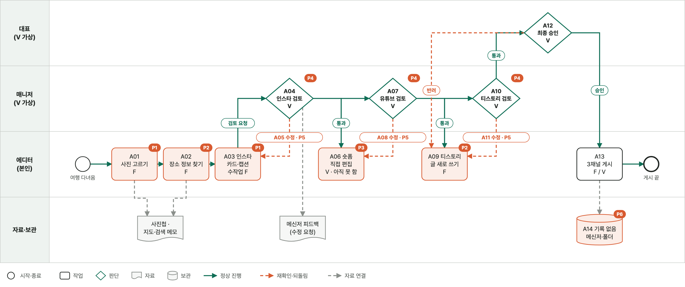
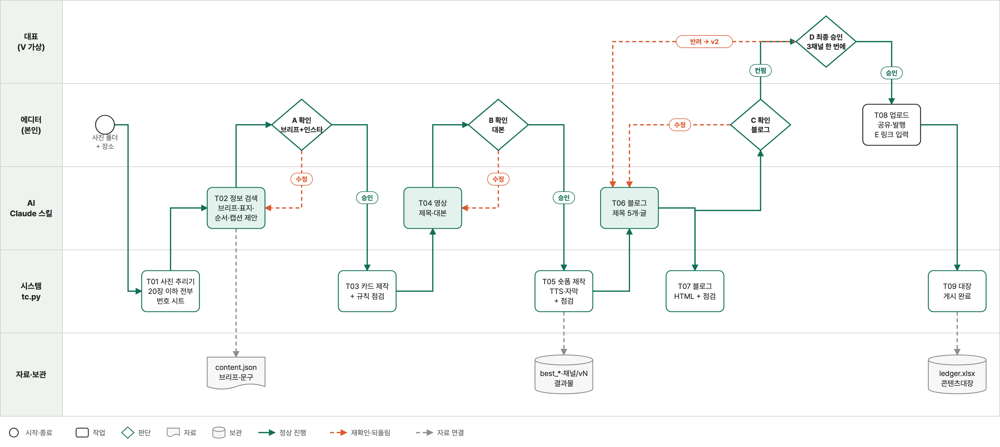
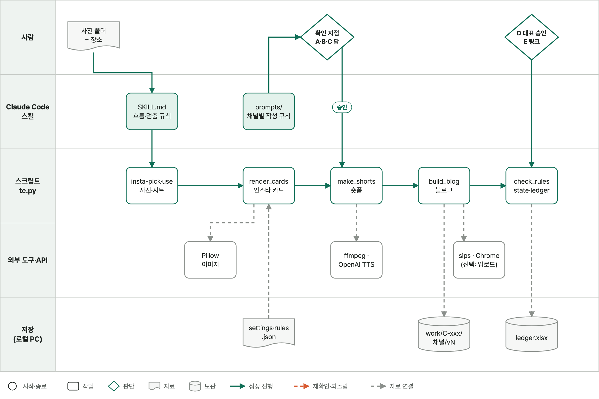
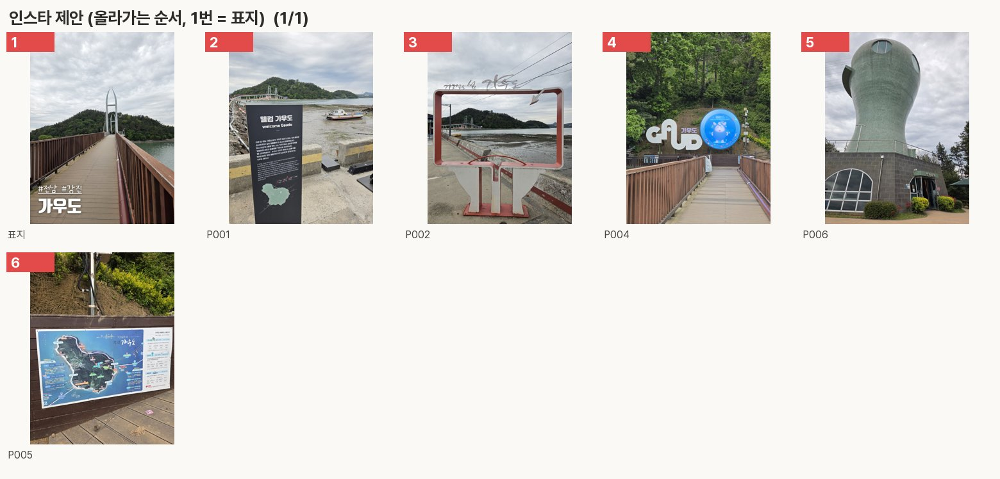
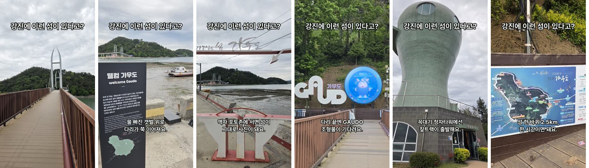
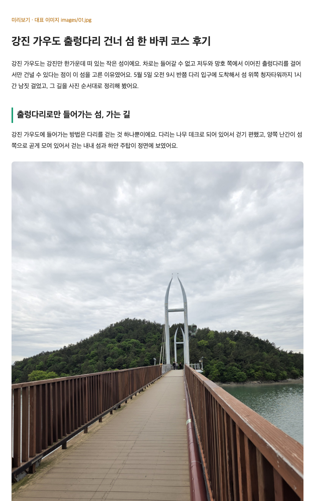
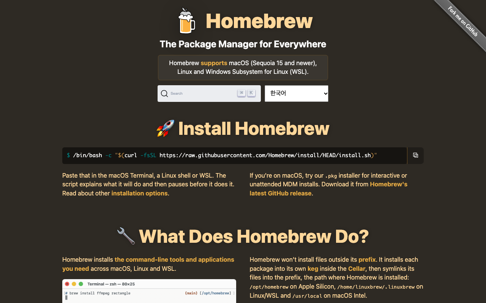
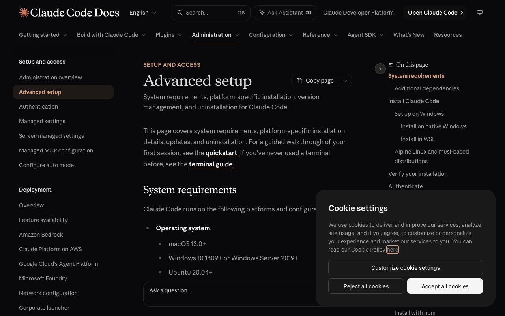

여행은 자주, 사진은 많이 — 그런데 인스타 게시는 1년 넘게 멈춤
| 업무 | 여행 사진으로 인스타 카드뉴스 → 유튜브 숏폼 → 티스토리 글 제작·승인·게시 |
| 담당자 | 에디터(본인, 실제) · 대표(가상 역할 · 배포 직전 승인) |
| 시작 → 끝 | 여행 사진 폴더 + 장소 → 3채널 게시 링크와 콘텐츠대장 기록 |
| 현재 자료·도구 | 사진첩 · 지도/검색 · 인스타 앱 · 티스토리 에디터 · 메신저 |
| 바꾸는 범위 | 사진 추리기 ~ 게시 링크 기록 (협찬·댓글 DM·KPI는 제외) |
| 선택안 | 1안 · Claude 스킬 + 로컬 파일 — 로컬 사진·영상 파일 · 하루 구현 · 추가 비용은 TTS 사용량만 |
입력은 사진과 장소, 사람은 확인 지점 5번만 답함

| ID | 자료 | 위치 | 단계 | 근거 (F 실제·V 가상) |
|---|---|---|---|---|
| D1 | 원본 사진 | 휴대폰 사진첩 | A01~A06 | F |
| D2 | 장소 정보 | 지도·검색 결과 | A02 | F |
| D3·D4 | 인스타 카드 · 캡션·해시태그 | 편집 도구 · 인스타 앱 | A03~A05 | F |
| D5 | 숏폼 영상·제목·설명 | 편집 앱 · 유튜브 스튜디오 | A06~A08 | V |
| D6 | 티스토리 글 | 티스토리 에디터 | A09~A11 | F |
| D7 | 검토 피드백·승인 | 메신저 | A04~A12 | V |
| D8 | 게시 링크 | 정리하지 않음 | A13 | F |
| 문제 | 단계 | 현상 | 근거 (F 실제·V 가상) |
|---|---|---|---|
| P1 | A01·A03 | 표지 형식이 정해져 있는데도 카드를 매번 손으로 | F |
| P2 | A02·A09 | 같은 장소 정보를 채널마다 다시 찾고 다시 씀 | F |
| P3 | A06 | 숏폼 편집 부담 → 유튜브는 아직 시작도 못 함 | F |
| P4 | A04·A07·A10 | 어떤 버전이 통과됐는지, 왜 반려됐는지 기록 없음 | V |
| P5 | A05·A08·A11 | 해시태그 개수·금지 표현·제목 길이를 눈으로 재확인 | F / V |
| P6 | A14 | 게시 이력·링크가 한곳에 없음 | F |

render_cards — 첫 장만 글자content.json — 사진·검색·메모make_shorts — TTS·자막·전환rules.json · 버전·반려 사유ledger.xlsx — 게시 링크까지| 담당 | 하는 일 | 하지 않는 일 |
|---|---|---|
| AI · Claude 스킬 | 사진 20장 추리기 · 표지·순서 제안 · 정보 검색(출처) · 캡션·대본·블로그 글 | 승인 대신 결정 · 확인 안 된 사실 확정 |
| 시스템 · tc.py | GPS 제거 복사 · 카드·숏폼·HTML 생성 · 규칙 점검 · 순서 강제 · 대장 기록 | 점검 실패 결과물로 승인 요청 |
| 사람 · 에디터 | 확인 지점 A·B·C 답 · 공유·발행 버튼 · 링크 입력 | — |
| 사람 · 대표(가상) | D · 세 채널 배포 직전 승인·반려 | — |
| 입력 | 사진 폴더(JPG·HEIC) · 여행지 이름 · (선택) 내 사진 폴더 insta_mine/ |
| 처리 | insta-pick → 브리프 → build(instagram·youtube·tistory) → check_rules |
| 승인 | A 브리프+인스타 · B 대본 · C 블로그 = 에디터 컨펌 / D = 대표 승인 |
| 결과·저장 | work/C-xxx/instagram·youtube·tistory/vN/ · OUTPUTS.md(파일 ✅/❌) |
| 기록 | work/ledger.xlsx — 추가만, 같은 사건 중복 방지, v1·v2 보존 |
| 비용 | 로컬 실행 · Claude Code 구독 · OpenAI TTS 사용량(키 없으면 macOS say로 대체) |
| 운영 | 규칙·디자인은 settings.json·rules.json 값만 수정 · 테스트 17개로 확인 |

| Claude Code | 스킬 실행 · 대화 |
| Python 3.12 | Pillow · openpyxl |
| ffmpeg | 숏폼 합성·검사 |
| OpenAI TTS | 내레이션 (say 예비) |
| sips | HEIC 변환 |
| Chrome | 선택 · 업로드 입력 |



| 제목 | 강진 가우도 출렁다리 건너 섬 한 바퀴 코스 후기 |
| 분량 | 본문 1,594자 (기준 1,500자 이상) |
| 키워드 | '강진 가우도' 5회 (기준 5~7회) |
| 사진 | 7장 · 고른 순서 그대로 · 연속 최대 1장 |
| 출력 | post.html · article.md · preview.html |
| 기록ID | 일시 | 채널 | 버전 | 사건 | 담당·메모 |
|---|---|---|---|---|---|
| L-0016 | 2026-11-10 00:16 | — | 인스타 사진 후보 | 시스템 · 원본 7장 → 후보 7장 | |
| L-0019 | 2026-11-10 00:42 | v1 | 점검 통과 | 시스템 | |
| L-0020 | 2026-11-10 00:43 | v1 | 컨펌 | 에디터 | |
| L-0021 | 2026-11-10 00:43 | v1 | 대표 승인 | 대표 | |
| L-0023 | 2026-11-10 00:48 | youtube | v1 | 점검 통과 | 시스템 |
| L-0029 | 2026-11-10 00:55 | tistory | v1 | 대표 승인 | 대표 |
| 완료 기준 | 근거 | 상태 |
|---|---|---|
| 시작·처리·끝이 명확 | To-Be 맵 · 사진 폴더 → 대장 게시 완료 | ✅ |
| 실제 입력으로 결과 생성·저장 | C-001·C-002 가우도 7장 → 3채널 결과물 | ✅ |
| 다시 실행해도 이전 기록 보존 | 대장 C-001 14행 + C-002 15행 · v1 폴더 보존 | ✅ |
| 실행 방법 · 작동/남은 문제 구분 | README · 실행 방법 장 · 한계 장 | ✅ |
| 게시 링크 기록 (E) | C-002 업로드 후 publish-all | 대기 |

터미널(⌘ + Space → "터미널")에 한 줄씩
/bin/bash -c "$(curl -fsSL https://raw.githubusercontent.com/Homebrew/install/HEAD/install.sh)" brew install python@3.12 ffmpeg git
python3.12 --version, ffmpeg -version
curl -fsSL https://claude.ai/install.sh | bash claude --version
claude → 브라우저 로그인.env에 붙여 넣기git clone https://github.com/jexists/travel-content-maker.git # 비공개 저장소 — 접근 권한 필요 cd travel-content-maker python3.12 -m venv .venv .venv/bin/pip install -r .claude/skills/travel-content/scripts/requirements.txt # Pillow, openpyxl cp .env.example .env # .env를 열어 OPENAI_API_KEY= 뒤에 키 (선택) .venv/bin/python -m unittest discover -s .claude/skills/travel-content/tests # 확인
실제 출력 Ran 17 tests in 5.157s OK
cd travel-content-maker claude
| 지점 | 보는 것 | 답 예시 |
|---|---|---|
| A | 사진 순서 시트 · 표지 · 캡션 · 검색 정보 | 이대로 / 내가 고를게 |
| B | 영상 제목 · 장면별 대본 | 이대로 / 고칠 문장 |
| C | 블로그 제목 5개 · 미리보기 | 2번 제목으로 이대로 |
| D | 세 채널 체크리스트 | 대표 승인 전부 |
| E | 올린 뒤 링크 칸 | 링크 3개 한 번에 |
work/C-002_가우도/ ├─ instagram/v1/ card_01~06.jpg · caption.txt ├─ youtube/v1/ shorts.mp4 · voice.m4a │ subtitles.srt · script.txt ├─ tistory/v1/ post.html · article.md │ preview.html · images/ ├─ usage.md 사진 사용표 └─ OUTPUTS.md 결과물 링크 ✅/❌ work/ledger.xlsx 콘텐츠대장
결과물 (✅ 실제 파일 있음 · ❌ 없음)
[인스타 v1]
✅ 카드 이미지: 6개
✅ 표지(썸네일): …/instagram/v1/card_01.jpg
✅ 캡션: …/instagram/v1/caption.txt
[유튜브 v1]
✅ 최종 MP4: …/youtube/v1/shorts.mp4
✅ TTS 음성: …/youtube/v1/voice.m4a
[티스토리 v1]
✅ 블로그 글(HTML): …/tistory/v1/post.html
✅ 블로그 이미지: 7개
| 상황 | 실제 메시지 | 해결 |
|---|---|---|
| 캡션 정하기 전 build | 거절: content.json이 없습니다 (표지·순서·캡션을 먼저 정하세요). | 확인 지점 A부터 진행 |
| 빈 insta_mine 폴더 | …/insta_mine 에 사진이 없습니다. 사진을 넣은 뒤 다시 알려 주세요. | 사진을 넣고 "넣었어" |
| 메인 주소를 링크로 | 거절: 게시물 링크가 아닙니다 (메인 주소가 아닌 게시물 주소를 주세요) | 게시물 ⋯ → 링크 복사 |
| 사진 20장 초과 | 사진이 N장이라 20장을 골라야 합니다. | AI가 후보 시트로 20장 선택 |
| OpenAI 키 없음 | ⚠️ OpenAI 키가 없어 예비 엔진으로 만들었어요 | .env에 키 저장 후 다시 build |
| Chrome 확장 미연결 | 업로드 자동 입력 불가 | 업로드 묶음으로 직접 올리기 |